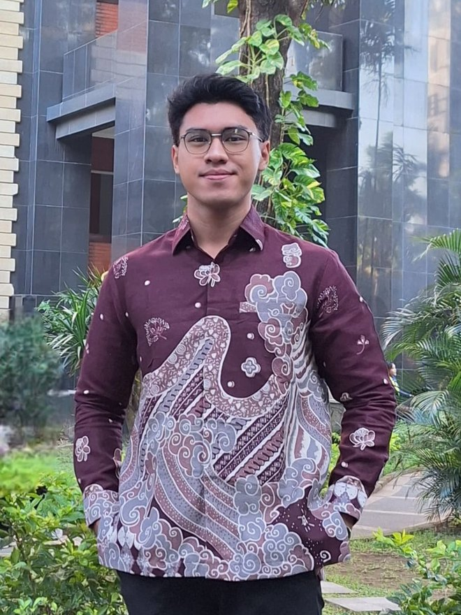

Anara Trisakti Medika — Jakarta Timur
Programmer & System Analyst (Magang)
| September 2026–Sekarang
Mengembangkan aplikasi dan menganalisis kebutuhan sistem perusahaan sebagai Programmer & System Analyst.

Programmer & System Analyst · Web Development · Data Analysis
Programmer & System Analyst (Magang)
| September 2026–Sekarang
Mengembangkan aplikasi dan menganalisis kebutuhan sistem perusahaan sebagai Programmer & System Analyst.
Social Media Specialist / Marketing Intern
| Agustus–Oktober 2025
Mengelola konten media sosial, menganalisis performa konten dengan insight dan metrik, serta membantu menyusun kalender konten dan ide kampanye digital.
IT Intern
| Agustus–September 2025
Mendukung kegiatan operasional di bidang Teknologi Informasi, dengan fokus pada analisis sistem perangkat lunak.
S1 Sistem Informasi (S.Kom)
| 2022–2026 · IPK 3,76
Skripsi: Market Basket Analysis dengan algoritma Apriori untuk menyusun rekomendasi bundling menu dari data transaksi.
Saya Angger, Sarjana Komputer dari Sistem Informasi Universitas Gunadarma. Saya membangun aplikasi web, mengolah data jadi insight, dan menerjemahkan kebutuhan bisnis menjadi sistem yang jalan. Di luar kerjaan, saya suka bikin alat kecil yang menjawab pertanyaan sehari-hari, seperti Banding Parfum.

Web App | Data Scraping | Proyek Pribadi
Website untuk membandingkan 218 parfum lokal dan impor dari 47 merek berdasarkan harga per ml, kualitas, dan notes. Datanya saya kumpulkan sendiri lewat script Python. Tidak perlu server: semua data dan logika berjalan di browser.
Filter merek, gender, family, acara & cuaca, harga, dan notes. Pencarian bahasa Indonesia yang toleran typo, kuis rekomendasi 5 pertanyaan, pencari dupe lokal dengan persen penghematan per ml, dan perbandingan hingga 4 parfum.

Sistem Booking | Pembayaran QRIS | Panel Admin
Website untuk bengkel motor, dibuat tanpa framework dan tanpa server database terpisah. Pelanggan bisa booking servis, membayar DP, dan belanja oli serta sparepart dari satu tempat.
Booking servis online dengan slot waktu terbatas, pembayaran DP via QRIS dengan verifikasi admin lengkap dengan invoice, toko oli dan sparepart, serta panel admin untuk mengelola booking, pembayaran, dan produk.
Dashboard | Data Visualization | Praktikum & Tugas Kuliah 2025
Empat dashboard Power BI dari praktikum dan tugas kuliah (April–Juni 2025): penjualan produk, supermarket sales, penjualan fast food, dan penjualan per produk.
Kartu KPI, slicer tanggal dan kategori, peta penjualan per kota, tren transaksi harian, serta halaman matrix untuk melihat rincian data.


Mencari menu yang sering dibeli bersamaan dari data transaksi, lalu menyusun rekomendasi bundling dengan Apriori dan association rules.
Webcam mendeteksi wajah dengan YOLOv8 dan memperkirakan umur. Hasilnya tampil di dashboard Flask dan dikirim ke ESP32 yang menampilkannya di LCD serta menyalakan LED.
Membantu memilih laptop sesuai prioritas pengguna dengan Simple Additive Weighting: normalisasi, pembobotan, lalu peringkat, perbandingan, dan favorit.
Mengidentifikasi masalah motor dari gejala pengguna. Aturan diagnosa disimpan di database, jadi mudah ditambah tanpa mengubah kode.
detail per bidang → Web Development Data & AI Social Media
Pelatihan dari Universitas Gunadarma, Pacmann, dan Digital Talent Scholarship. Klik sertifikat untuk melihat ukuran penuh.
Digital Talent Scholarship